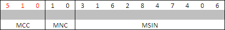

IMSI
Apa itu IMSI?
IMSI (International Mobile Subscriber Identity) adalah sebuah rangkaian nomor unik 15 digit yang fungsinya sebagai pengenal mobile provider yang akan selalu berbeda untuk setiap Mobile Provider di seluruh dunia. IMSI di simpan di dalam SIM Card pelanggan. IMSI tersusun atas 3 bagian:
- 3 digit pertama adalah MCC (Mobile Country Code) atau Kode Negara Telpon Seluler.
- 2 digit selanjutnya adalah MNC (Mobile Network Code) atau Kode Penyedia Jaringan Telpon Seluler.
- Dan, 10 digit sisanya adalah MSIN (Mobile Subscriber Identity Number).
Contoh IMSI:

Berikut MNC Operator di Indonesia
10 = Telkomsel
11 = XL Axiata
01 = Indosat
08 = Axis
09 = Smart
89 = Three
99 = Esia
27 = Ceria
Dimana mendapatkan IMSI SIM Card?
Pada saat Anda melakukan pembelian OtomaX Anda akan diminta IMSI sebagai salah satu syarat pemprosesan pembelian, dimanakah Anda dapat mendapatkannya?
Untuk mendapatkan IMSI (dari SIM Card) silahkan install OtomaX Free Edition dahulu (Software Pendukung, Software OtomaX Free Edition dan Tutorial Instalasi dapat diakses disini dan disini). Setelah itu jalankan OtomaX Free Edition (bila muncul form login masukkan: Login ID: admin Password: admin), Cari menu Bantuan -> Tentang, nanti akan keluar Jendela seperti berikut:
Naah... Nomor Unik yang Kami kasih kotak warna merah di atas ialah IMSI (dari SimCard).